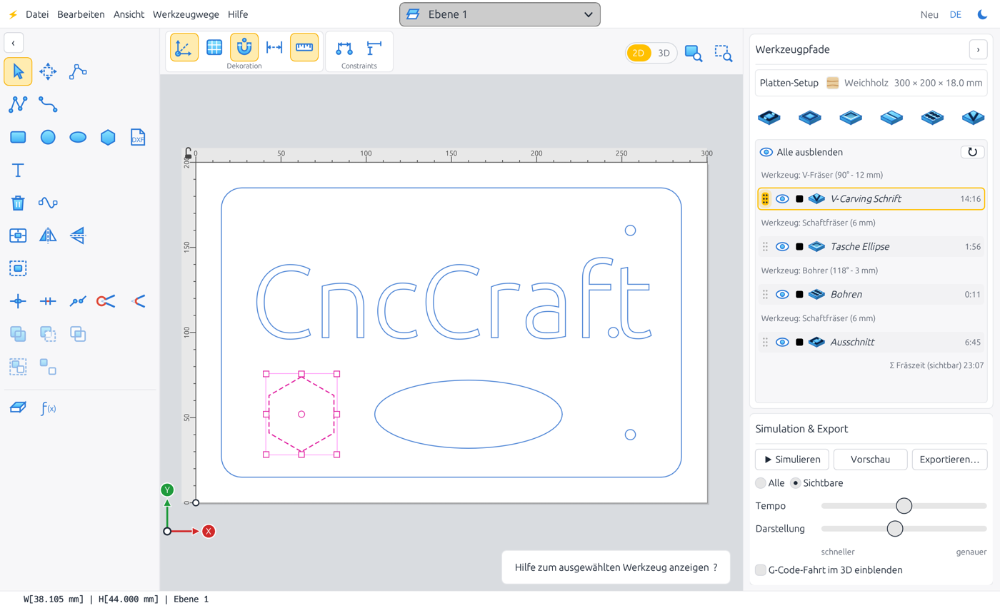

Die Werkzeugwegliste Neu in CncCraft
Die Liste zeigt alle Werkzeugwege mit Farbe, Art, Name und geschätzter Fräszeit.
Unter den Knöpfen für neue Werkzeugwege liegt die Liste.


| Element | Bedeutung |
|---|---|
| Griff links (⠿) | Ziehen ändert die Reihenfolge – so wird auch die Datei später geschrieben. |
| Auge | Blendet den Werkzeugweg in Zeichnung, Vorschau und Ausgabe ein oder aus. |
| Farbquadrat und Symbol | Die Art des Werkzeugwegs und seine Farbe in der Zeichnung. |
| Name | Ein Klick wählt den Werkzeugweg aus: Seine Formen werden in der Zeichnung gewählt, und er ist der „ausgewählte“ für Vorschau und Export. Doppelklick öffnet das Formular zum Ändern. |
| Zeit | Die geschätzte Fräszeit in Minuten und Sekunden. |
- Alle ausblenden / Alle einblenden schaltet alle Werkzeugwege zugleich.
- Werkzeug-Einträge: Über dem ersten Werkzeugweg und überall, wo ein anderes Werkzeug beginnt, steht ein kleiner Eintrag „Werkzeug: …“ – ab dort fräst dieser Fräser, bis ein neuer Eintrag kommt. Haben zwei Werkzeugwege hintereinander dasselbe Werkzeug, steht der Eintrag nur über dem ersten.
- Der Knopf ↻ berechnet alle Werkzeugwege neu.
- Fährt die Maus über eine Zeile, erscheinen rechts kleine Knöpfe: ✎ bearbeiten, 🗑 löschen sowie ⏶ und ⏷ zum Verschieben nach oben und unten.
- Unter der Liste steht die Gesamtfräszeit der sichtbaren Werkzeugwege.
- Fährt die Maus über einen Eintrag, nennt ein Hilfetext Art, Start- und Schnitttiefe sowie die Zeit.
Kann ein Werkzeugweg nicht berechnet werden – zum Beispiel weil das Werkzeug für die Form zu groß ist –, zeigt die Liste ein Warndreieck mit dem Grund.